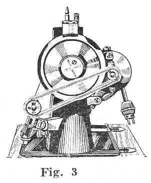
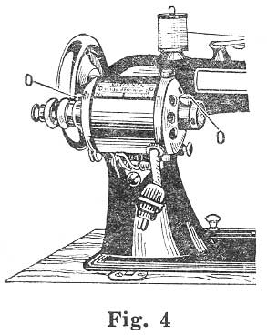
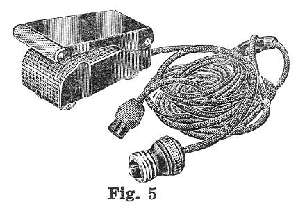

THE NEEDLEBAR
Manuals Section
For operating and adjusting the
REGAL PAVEWAY
ELECTRIC SEWING MACHINE
Lower Thread
For most all ordinary work this does not require changing, the stitch being governed by the upper thread. If the shuttle thread draws easily and smoothly, but with a firm feeling, it is probably right, and the stitch should be perfected by the upper tension. The shuttle tension is obtained by means of the screw near the point of the shuttle. Turn it to the right to increase, and to the left to diminish the pressure of the thread. The change can be accomplished without removing the shuttle from its carrier.
TO REGULATE THE TENSION
Upper Thread
Turn the tension thumb screw to the right until the thread seems to draw through with about the same resistance as it did from the shuttle, for the purpose of making a stitch alike on both sides.
If the under thread lies straight or is drawn sufficiently into the goods, turn the tension screw more to the right. If such is the case with the upper thread, turn to the left, or increase the shuttle tension. Soft or thin goods require but little tension, but on thick and heavy goods the tension should be heavier.
Note - Too little tension will make looped stitches.
Proper adjustment of the tension is one of the most important requisites for neat stitching.
Loop stitches sometimes occur from using needles too fine for the thread; but generally from the thread feeding off too freely which is corrected by increasing the tension. If the upper thread loops, increase the upper tension; if the lower, increase the shuttle tension.
If you have too much tension on both threads it will be shown by the constant breaking of the upper thread or the gathering of the work.
If you wish to sew with a view to ravel easily, leave the upper tension so light that the under thread will not be drawn into the goods, but lie straight.
For sewing flannel or "bias" seams, use a fine stitch and as light a tension as possible so as to leave the thread loose enough to stand the strain of stretching the goods.
BREAKING THE UPPER THREAD
May be caused by the needle not being properly set, the machine not threaded correctly, the upper tension too tight, the thread uneven and the needle too small for it, the eye of the needle being too sharp, the presser foot attached to the machine so that the needle rubs against it, or by a sharp place or burr being formed on the needle plate around the needle hole, by needles being allowed to strike it.
Breaking of thread is also caused through using a needle of improper dimension; one not made for this machine, or through the upright part of the shuttle carrier spring breaking or working loose and catching the upper thread as it loops around the shuttle.
BREAKING THE LOWER THREAD
May be caused by too much tension in the shuttle, by the bobbin being wound too full so that the thread at the end slips over the bobbin in the shuttle, by the thread being caught in the shuttle slide plates or by a burr formed in needle plate hole through the needle striking it. The shuttle slides should always be kept tightly closed when operating the machine, the bobbin should never be wound so full as to prevent its being turned freely in the shuttle.
|
TO WIND BOBBINS
|
|
|
To wind bobbins, raise the spooler to its highest point where it is locked in position, as shown in Fig.3. Connect spooler pulley and motor pulley with spring belt, as shown in Fig.3. Take the bobbin in left hand and the thread in the right. Place the left hand center of the bobbin in the little depression for it in the end of the spooler spindle, and by pressing to the left the spindle will move back and allow the head of the bobbin to enter the friction cavity or cup at the right hand. As it enters this cavity see that the end of the thread goes with it, and that it is held in the cup by the pressure of the bobbin head. This will hold the thread securely when the winder starts. Unless this is done, it will be necessary to wrap the thread several times around the shank of the bobbin or else tie it, in order to get it started. Draw the thread in the notch at the top of the distributing bar, then down under the notch at the lower end of the distributing bar. Loosen the hand wheel by turning milled edge hand nut on right end of shaft to the left (top toward you) one-half turn, this will permit the operation of the wheel and bobbin winder while the working parts of the machine stand still.
|

|
There is nothing more important to insure satisfactory working of the machine than to keep it thoroughly clean and well oiled. Use nothing but the best quality oil Turn the machine slowly as the oil is put on, to distribute it in the bearings. Always clean the machine well before putting on fresh oil. The places for oiling are marked O (See Fig.1). Oil as often as there is any indication of dryness. If the machine runs hard it is a sure indication that oil is needed.
MOTOR LESSON
Attach screw plug at end of the long cord, as seen in Fig. 5, to any electric light socket. The short wire makes the motor connection. Place the foot control on the floor and press lightly, this will start the wheel moving slowly, pressing a little harder will make it run faster.
Points marked "oil" in Fig. 4 are the only places where the motor requires oiling. A drop of good sewing machine oil once a day where a machine is used constantly by dressmakers, or once a week where it is used occasionally, as in a home, will insure perfect running and satisfactory results.
|

|

|